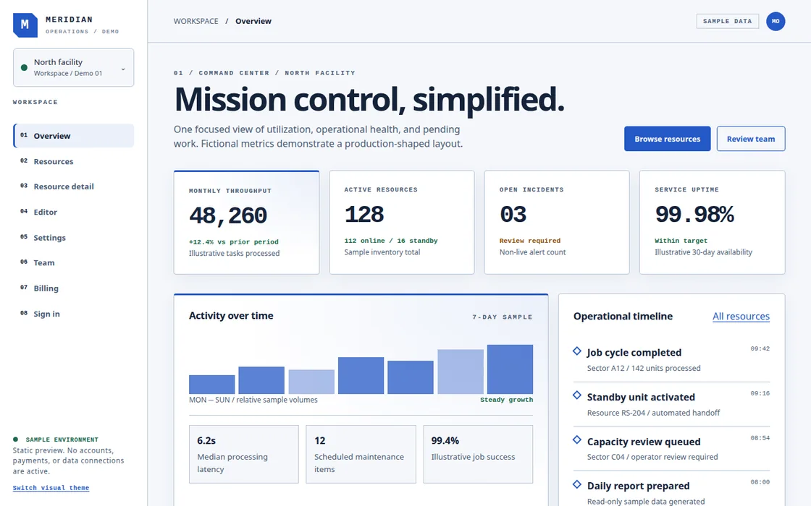

01 / GRID CONSOLE
Command center
Accessible navigation, telemetry, responsive cards and native controls.
Complete, original application screens for independent developers who prefer HTML, Go templates, HTMX, or Astro over a new component runtime.
PRIVATE PROTOTYPE / NOT AVAILABLE FOR PURCHASE
An internal prototype now contains 8 original screen types across Grid, Noir and Studio themes (24 static variants). It remains private for design-partner and accessibility review; no customer license, payment integration, delivery date or sale exists. Only the existing MIT examples below are publicly accessible.
Proposed introductory price to test: $59 one-time, if sufficient demand exists. This is not an offer, purchase page, or preorder. No payment is being accepted.
This is research, not a purchase form. Screenshots show synthetic data and inactive backend operations. They are not proof of a deployed application.
STATIC / SAMPLE DATA / PRIVATE PROTOTYPE
These are genuine desktop screenshots from the separately authored private prototype, captured at a fixed viewport. Open an image to inspect its original resolution. This is not an interactive demo: links, data, authentication and billing in the kit require integration with your own backend.



Both MIT-licensed examples are available now. They illustrate the aesthetic and markup standards; additional original screen compositions are being tested privately and are not customer deliverables.
01 / GRID CONSOLE
Accessible navigation, telemetry, responsive cards and native controls.
02 / NOIR REGISTRY
Search-form design, readable data table, synthetic status metrics and mobile layout.
PRIVATE PREVIEW SCOPE / SUBJECT TO VALIDATION
No delivery date, support plan or final license is offered yet. All essential components and all free CSS themes remain MIT and free. The future premium license would apply only to new, separately authored page compositions.
Would you pay $59 for this, or is something critical missing? Tell us the real problem you need solved.